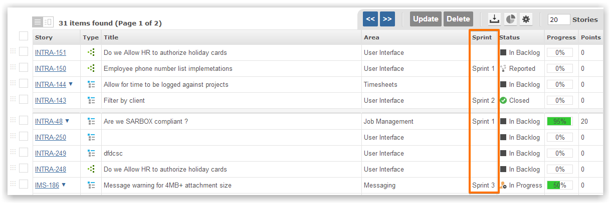

Sprint planning is the process of selecting and scheduling items for delivery. Work items that have been selected are allocated a sprint.
There are two ways to allocate items to sprints. Choose the one that works for you or can use both.
The items grid can be used to quickly allocate an item to a sprint. Simply click on the Sprint cell to set the sprint for the item.

Estimates are time based and specify how many hours and minutes are required to complete the item.